ライン管理カレンダー
VER4.2.0月のカレンダーに、ラインの休み・コメント・連絡を登録して見るツールです。登録したものは共有フォルダを通して、ほかのラインのパソコンにも届きます。
1. このツールでできること
- カレンダーの日付を押して、休み(だれが休むか・直・残業繋ぎ・早出繋ぎ)を登録します。
- ライン・班あてのコメント・連絡を登録します。
- その日の登録の内容を見る・まちがえた登録を消すことができます。
- 月のカレンダーを A4 横 1 枚に印刷できます。
- 過去の月を履歴で見られます(見るだけ)。
開きかた: 日報複合ツールの大きなタブの「カレンダー」を押します。少し待つとカレンダーの画面が出ます。
2. 画面の見かた
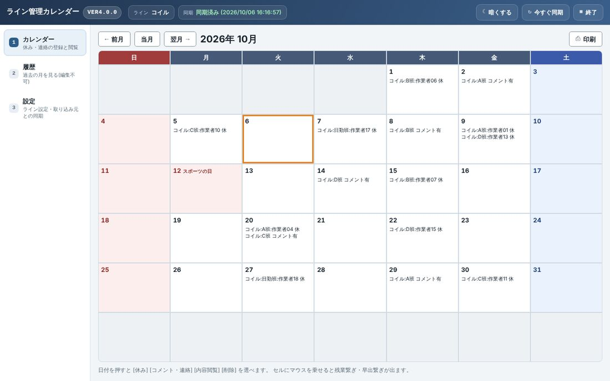
1 2 3 4 5 6 7 8 9 10 11 12 13- ツールの名前と版(VER4.2.0)。問い合わせのときに読み上げます。
- ライン … このパソコンのライン。カレンダーに出るものはこれで決まります。
- 同期 … ほかのラインとのやりとりの状態。ふだんは緑の「同期済み(日時)」です(5. 同期)。
- 暗くする … 画面を暗い色にします(押すと 明るくする に変わります)。夜勤でまぶしいときに。
- 今すぐ同期 … ほかのラインの登録をすぐに取り込みます。
- 終了 … 日報複合ツール全体を閉じます(9. 終わるとき)。
- 左の並び … カレンダー(休み・連絡の登録と閲覧)/履歴(過去の月を見る)/設定。
- ← 前月 当月 翌月 → … 月を切り替えます。当月 で今月に戻ります。キーボードの PageUp / PageDown でも動きます。
- いま見ている年月。
- 印刷 … この月を A4 横 1 枚で印刷します(4. 印刷する)。
- 今日のマスはオレンジの枠で囲まれます。
- 登録のある日 … 休みは「コイル:A班:作業者01 休」、連絡は「コイル:B班 コメント有」のように出ます。連絡の文は内容閲覧で読みます。
- 日曜・祝日は赤、土曜は青の色です。祝日には名前(スポーツの日 など)が出ます。
3. 毎日の操作(日付を押して登録する)
どの操作も、カレンダーの日付のマスを押すところから始まります。
日付を押す
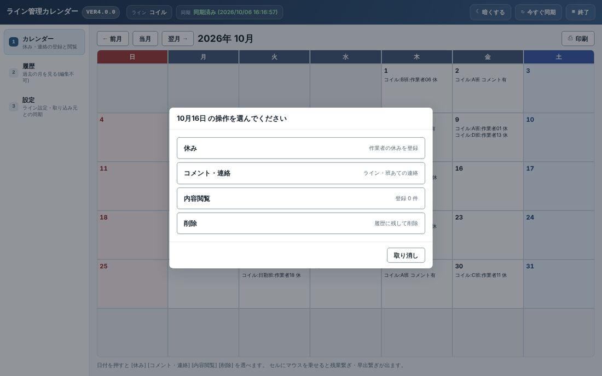
1 2 3 4- 休み … 作業者の休みを登録します。
- コメント・連絡 … ライン・班あての連絡を登録します。
- 内容閲覧 … その日の登録を読みます(右に登録の件数が出ます)。
- 削除 … まちがえた登録を消します(消したものは記録に残ります)。
やめるときは 取り消し を押します。
休みを登録する
日付を押して 休み を押します。
「休みにする作業者」の一覧が出ます。休む人の名前を押します。班ごとに縦に並んでいます。
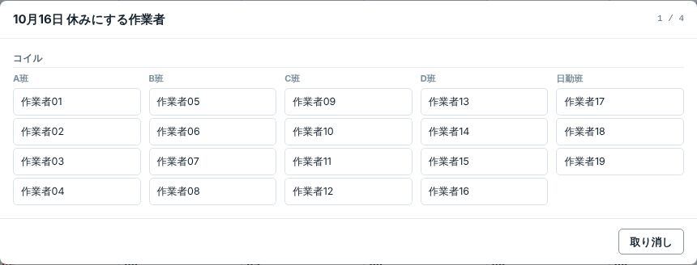
右上の「1 / 4」は、4つのうちの1つ目という意味です A・B・C・D 班の人なら、続けて「○○ さんの直」が出ます。1直 2直 3直 から休む直を押します。
日勤班など A〜D 以外の班の人は、直は聞かれず、ここで登録されます(手順 6 へ)。
「○直の残業で繋ぐ人」が出ます(見出しがオレンジで、札は「残業繋ぎ」)。休んだ直の前の直で残業して繋ぐ人を押します。
「○直の早出で繋ぐ人」が出ます(見出しが青緑で、札は「早出繋ぎ」)。休んだ直の次の直で早出して繋ぐ人を押します。
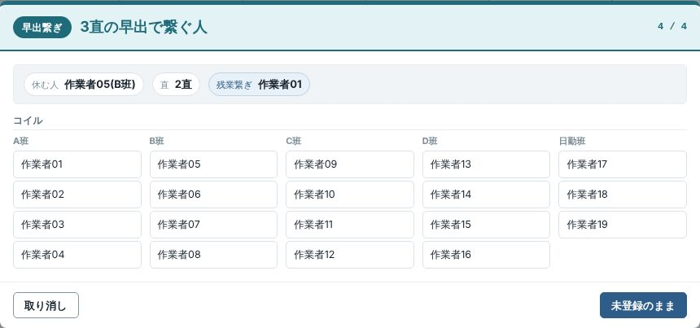
1 2 3 44つ目(早出繋ぎ)の窓。2直を休むので、1直の残業と3直の早出で繋ぎます - いまどれを選んでいるか(残業繋ぎ / 早出繋ぎ)。
- ここまでに選んだもの。休む人・直・残業繋ぎ が正しいか確かめます。
- 取り消し … 登録をやめます(何も登録されません)。
- 未登録のまま … 繋ぐ人がまだ決まっていないときに押します。「未登録」として登録されます。
右下に「○○ さんの休みを登録しました」と出て、カレンダーのマスに「コイル:B班:作業者05 休」と出れば終わりです。
1 21 登録した日のマス 2 登録できたという知らせ(しばらくすると消えます)
コメント・連絡を登録する
日付を押して コメント・連絡 を押します。
「連絡の宛先」でラインと班を選び、次へ を押します。ラインを選ぶと、班はそのラインにある班だけになります。
連絡の文を入力して 登録する を押します。
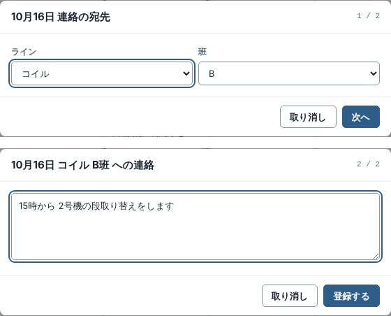
上: 宛先を選ぶ(1 / 2) 下: 文を入れる(2 / 2) 「コイル B班 への連絡を登録しました」と出て、マスに「コイル:B班 コメント有」と出れば終わりです。
内容を見る(内容閲覧)
日付を押して 内容閲覧 を押すと、その日の登録がすべて出ます。読むだけなので、ここで消えたり変わったりすることはありません。閉じる で戻ります。
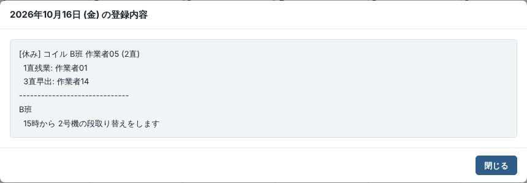
まちがえた登録を消す(削除)
日付を押して 削除 を押します。
その日の登録が並びます。消したいものだけにチェックを入れて、選んだものを削除 を押します。
「削除の確認」が出ます。よければ 削除する、やめるときは やめる を押します。
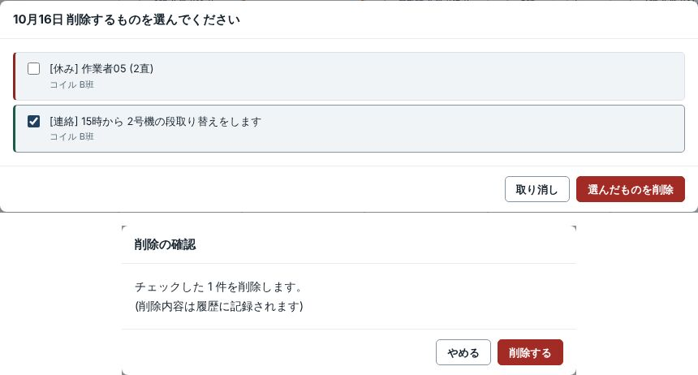
上: 消すものにチェック 下: 最後の確認 「1 件を削除しました」と出れば終わりです。
4. 印刷する
印刷したい月を出して、右上の 印刷 を押します。
印刷用の窓が開きます。印刷する を押すと印刷の画面が出るので、プリンターを選んで印刷します(Ctrl+P でも同じです)。
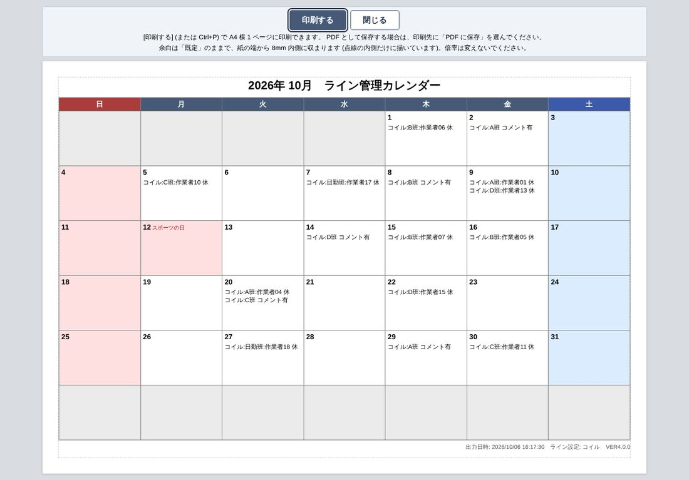
1 2 3 4印刷用の窓(ボタンと案内の文は紙には刷られません) - 印刷する … 印刷の画面を出します。
- 閉じる … 印刷用の窓だけを閉じます。
- 紙に刷られる月とカレンダー。点線の内側だけが刷られます(点線は刷られません)。
- 右下に出力日時・ライン・版が刷られます。
終わったら 閉じる を押します。
5. 同期(ほかのラインとのやりとり)
登録したものは、まずこのパソコンに保存され、すぐに共有フォルダの取り込み元へ送られます。ほかのラインの登録は、決まった間隔(ふだんは 20 秒ごと)で自動で取り込まれ、画面も自動で描き直されます。これを「自動同期」と呼びます。
状態は上の帯の「同期」に出ます。
| 帯の表示 | 意味 | すること |
|---|---|---|
| 同期済み (日時) | 送り終わっていて、その時刻の内容を見ています。 | 何もしなくてよい。 |
| 送信待ち ○ 件 | 送っている途中です。 | 少し待つ。 |
| 未送信 ○ 件 / (理由) | 共有フォルダに届かず、送れていません。入力はこのパソコンに残っています。 | そのまま使ってよい。届くようになれば自動で送られます。長く続くときは班長・管理者へ(困ったとき)。 |
| 自動同期オフ | 取り込み元の場所(参照パス)が決まっていません。登録もできません。 | 管理者に設定を頼む。 |
今すぐ同期
ほかのラインが登録したものをすぐ見たいときは、上の帯の 今すぐ同期 を押します。右下に「同期しました」と出て、カレンダーが新しくなります。届かないときは「送れませんでした: …」と出ます。
6. 履歴(過去の月を見る)
左の並びの「履歴」を押すと、過去の月を見るだけの画面になります。ここからは登録も削除もできません(押しまちがいで昔の記録が変わらないようにするためです)。紙のような茶色の地と「履歴・閲覧のみ」の札が目じるしです。
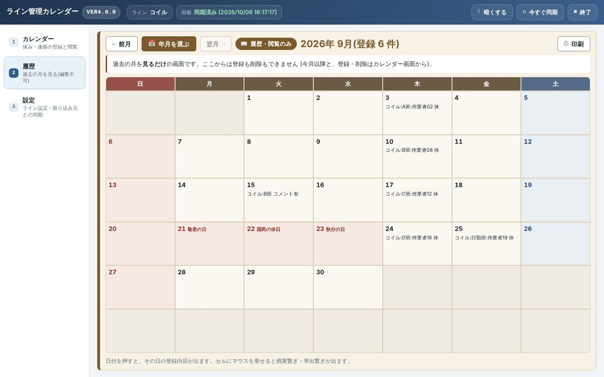
1 2 3 4 5- ← 前月 / 翌月 → … となりの月へ動きます。
- 年月を選ぶ … 年ごとに 12 か月のマスが出ます。← 前の年 次の年 → で年を変えて、見たい月を押します。マスにはその月の登録の件数が出ます。
- 「履歴・閲覧のみ」の札。いまは見るだけの画面だという意味です。
- 印刷 … この月を印刷します(やり方は印刷すると同じ)。
- 日付を押すと、その日の登録内容が出ます(読むだけ)。
選べるのは、登録がある一番古い月から先月までです(点線のマスは選べません)。今月から先は「カレンダー」で見ます。
7. 設定
左の並びの「設定」で開きます。設定は最初に 1 回、班長・管理者が決めるものです。毎日さわる必要はありません。
| 設定 | 中身 | だれが・いつ |
|---|---|---|
| 1. この端末のライン | このパソコンのライン。カレンダーに出るもの(休み・連絡)が変わります。 | 管理者が最初に 1 回。管理者パスワードが要ります。 |
| 2. 参照パス | 取り込み元(共有フォルダ)の場所と、自動同期の「する/しない」・取り込み間隔(秒)。 | 管理者が最初に 1 回。場所を変えるには管理者パスワードが要ります。 |
| 3. 取り込む | 取り込み元から班員名簿・休みを取り込み直します。 | 班員名簿が出ないときなど。 |
| 4. マスタ確認・管理 | 班員名簿の確認と修正、端末一覧、削除履歴など。 | 管理者。 |
| 5. 管理者パスワード | 上の設定を守るパスワードを変えます。 | 管理者。 |
| 6〜9 | 配布設定・ファイルの置き場所・いまの状態・ログ(エラーの後追い)。 | 管理者・問い合わせのとき。 |
| 10. 画面の見た目 | 「自動(Windows の設定に合わせる)」「ライト(明るい背景)」「ダーク(暗い背景)」から選びます。最初は「ライト」です。このパソコンだけの設定です。 | だれでも。 |
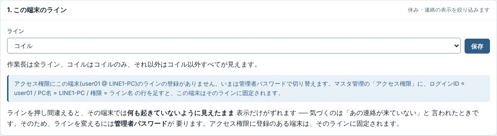
1 2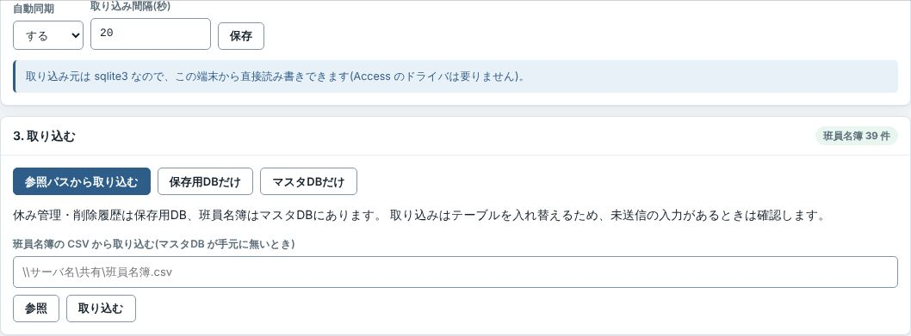
1 2 38. 困ったとき
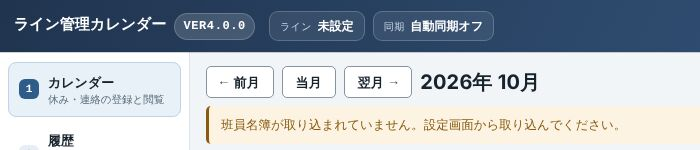
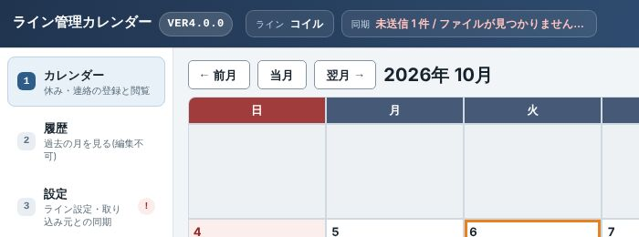
1 2| こうなった | こうする |
|---|---|
| 「班員名簿が取り込まれていません。設定画面から取り込んでください。」と出る | 設定の「3. 取り込む」で 参照パスから取り込む を押します。「自動同期オフ」と出ているときは参照パスが決まっていないので、管理者に頼みます。 |
| 休みを押すと「作業者が居ません」と出る | 班員名簿が入っていないか、このパソコンのラインが合っていません。班長・管理者に、設定の「取り込む」と「この端末のライン」を見てもらいます。 |
| 「登録できません … 取り込み元(連絡帳)が見つからないため、登録できません。」 | 参照パスが決まっていません。管理者に設定を頼みます。 |
| 「登録できません … ○○ さんは既に登録済みです。」 | その日にその人はもう登録されています。内容閲覧 で確かめます。直したいときは削除してから登録し直します。 |
| 帯に「未送信 ○ 件 / …」、設定に「!」が出る | 共有フォルダに届いていません。入力はこのパソコンに残っていて、届けば自動で送られます。少しして 今すぐ同期 を押し、「同期しました」と出れば直っています。長く続くときは班長・管理者へ。 |
| 「送らなかった登録があります」と出る | ほかのパソコンが先に同じ人・同じ日を登録していたので、こちらの登録は送られませんでした。カレンダーに出ているのは先に届いた登録です。直や繋ぎが違うときは、その日の登録を確かめて、削除してから登録し直します。 |
| ほかのラインの登録が出てこない | 今すぐ同期 を押します。それでも出ないときは、上の帯の「ライン」が正しいか確かめます(コイルのパソコンにはコイル以外の休みは出ません)。 |
| 「バックエンドに接続できません」の帯が出る | 再接続 を押します。だめなら 再読込。それでもだめなら、日報複合ツールを終了して開き直します。 |
| 「すでに別の画面で開いています」と出る | 同じパソコンで、もう 1 つカレンダーの画面(ブラウザ版など)が開いています。こちらで使うなら この画面で使う を押します。 |
| 「思わぬエラーが起きました(記録番号 E…)」と出る | もう一度やってみます。だめなときは、記録番号をメモして管理者に伝えます。 |
| 画面が動かない・おかしい | 日報複合ツールの右上の「終了」で閉じて、もう一度開きます。 |
日報複合ツールが開けないときは、管理者が予備のブラウザ版で同じ画面を開けます(管理者に相談してください)。
9. 終わるとき
日報複合ツールの右上の「終了」を押して閉じます。
カレンダーの画面の上の帯にある 終了 でも閉じられます。「終了しますか?」と聞かれるので、終了する を押します。このときは日報複合ツール全体(ほかのツールのタブも)が閉じます。
ライン管理カレンダー VER4.2.0 の操作説明書です。日報複合ツールの「説明書」ボタンから、いつでも開けます。画面写真の名前(作業者01 など)はすべて例です。